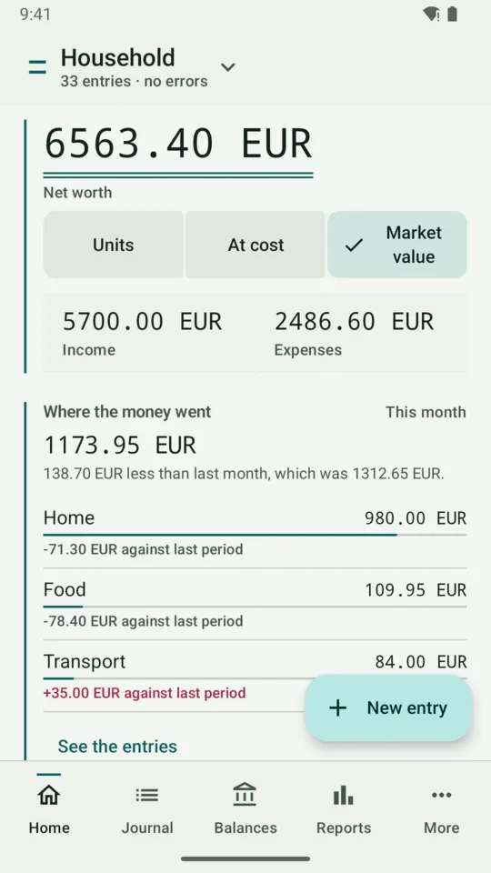
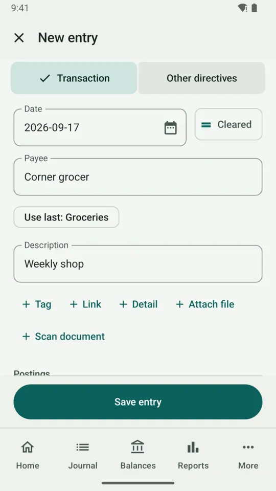
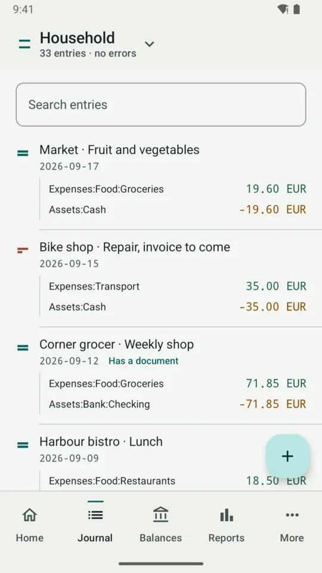
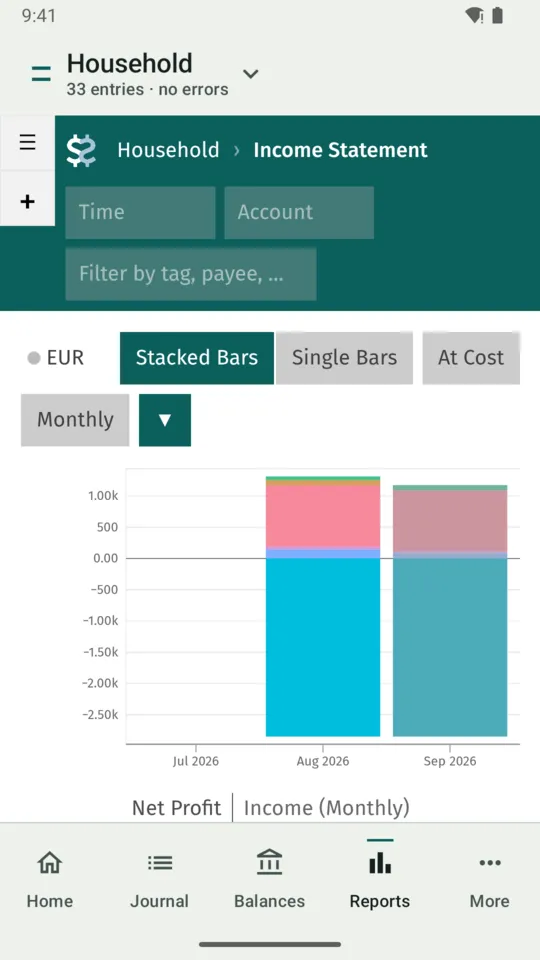
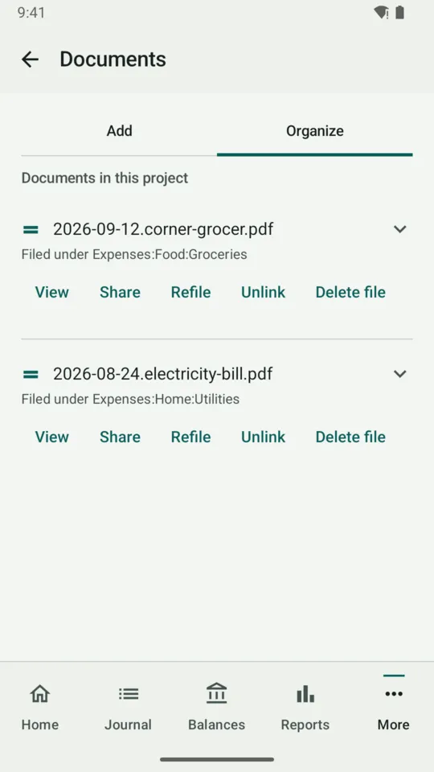

Beanbook:Android
Your money, written down where you can read it.
Record what you spend and earn, see where it goes, and keep receipts with the entries they belong to. Everything stays on your phone as ordinary text files you can open on a computer. No account to make, and nothing is uploaded.
2026-09-14 * "Corner grocer" "Weekly shop" Expenses:Food:Groceries 42.50 EUR Assets:Cash -42.50 EURSum of the postings 0.00 EUR
What runs inside the app
- CPython
- 3.13
- Beancount
- 3.2.3
- Fava
- 1.30.15
- beanquery
- 0.2.0
- beangulp
- 0.2.0
The real thing, not a copy of it. The app runs the same Beancount and Fava software people use on a desktop, so a ledger opens the same way in both places.
Your file stays yours
Beanbook uses Beancount, plain-text double-entry accounting: each transaction is a few lines of text that must balance, and every report is worked out from those lines. Your records stay text files in a folder, in your own layout, not locked inside a database only this app can read. It suits people who want to own their books as text; it does not connect to your bank, and it does not give financial advice.
-
Edit without giving up text
Add transactions and other entries with a form, or edit your ledger files directly. Every change is checked by Beancount before it is saved.
Entries and editing -
Read the full reports
Use Fava's reports, charts and account views, and BQL, Beancount's query language, on the phone.
Reports -
Import, export and back up
Bring a ledger in, copy it out, back it up and restore it. Free, like everything else, in both editions.
Everything is free -
Keep control of network use
On this device the app makes no network requests, unless you ask the Expert edition to download a plugin. With your own Fava server, it connects only to the address you enter.
Privacy policy
At a glance
10+ Android API 29 or later
2 ABIs arm64-v8a and x86_64
0 tracking No analytics, ads, or crash reporting
The app, as it is
See where the month stands, record a purchase, find it again, read the reports and keep the receipt with it. Open a screen to see what each part does.
-

-

-

-

-



Two editions. The same ledger format.
Play and Expert share the same features, and both are free. They differ only in where plugins and the libraries they need can come from, whether a plugin can use your phone's own features, and how the app updates.